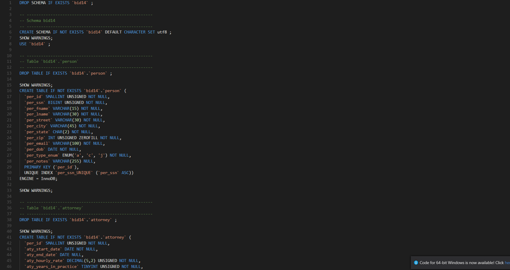
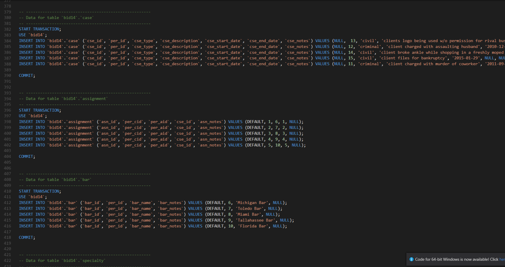
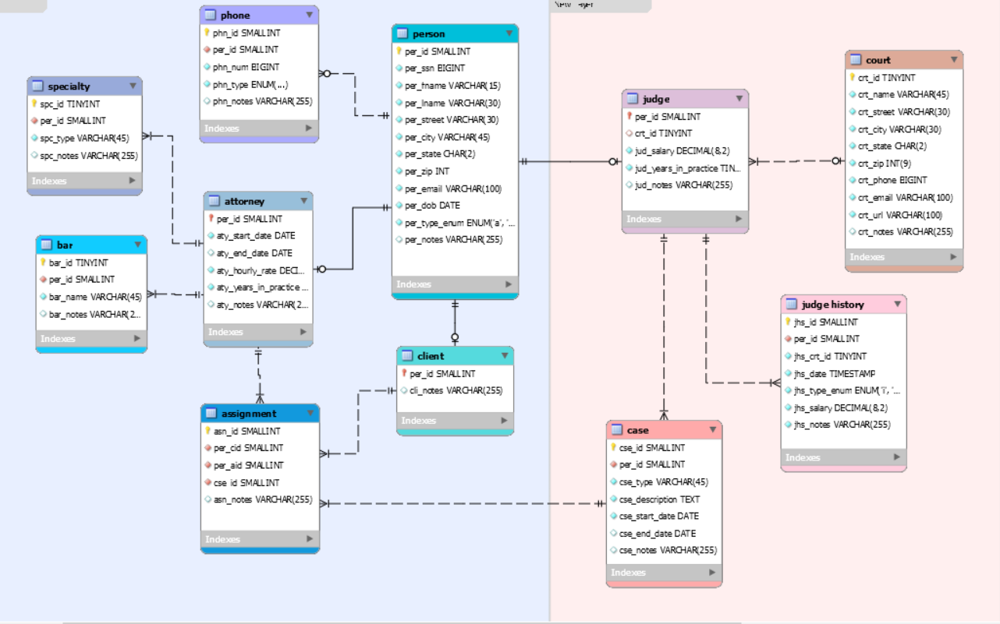

The purpose of this course was to establish familiarity and understanding with the most widely used DBMS. For this project we worked with MySQL to develop an ERD and SQL code to create a database that tracks lawyers, judges and clients. There was a total of 11 tables developed with a minimum of 5 inserts within the tables.
For the SQL code, I generated create statements to define the attributes for the tables, set the primary keys and set the relationships between the tables by defining foreign keys.
I also generated the insert statements to populate each table with valid data.
I then forward engineered the SQL to develop a Entity Relationship Diagram. I color-coded the diagram to make it more appealing and easier to visualize the differentiation between people and courts.